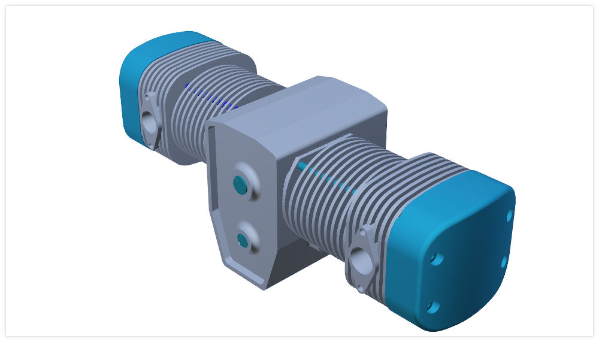

gltfViewer

Usage
It is a command line application on all platforms except macOS.
Usage: tools/gltfViewer/gltfViewer [options] source
This tool renders glTF 2.0 files.
Example:
./gltfViewer [-f] my_file.gltf
Options:
- -h, --help Displays this help.
- -v, --version Displays version information.
- -f, --fullScreen show full screen.
- -p, --play <animations> play named animation
- -l, --loop loop animations
- -c, --camera <camera> use named camera
- -s, --scene <scene> index of the glTF scene to load
: Arguments:
- source gltf 2.0 file to render.
Runtime Keyboard Shotcuts:
- space Toggle play state of animations
- tab Render the scene with the next camera
- previous Render the scene with the previous camera
- ctrl + r Reload the glTF file